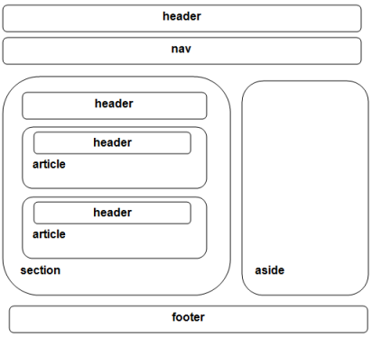

HTML5 og Universell utforming
Trond Klakken | @trondkla
HTML5
*Sergey Mavrody "Sergey's HTML5 & CSS3 Quick Reference. 2nd Edition". Belisso Corp., 2012
Ny markup
*bubblogging.wordpress.com
Ny doctype
<!DOCTYPE html>
<!DOCTYPE HTML PUBLIC "-//W3C//DTD HTML 4.01 Transitional//EN" "http://www.w3.org/TR/html4/loose.dtd">
Offline støtte

Jake Archibald: The ServiceWorker
is coming,
look busy | JSConf EU 2014
Universell utforming
Hva er egentlig
universell utforming?
Informasjonsvideo om universell utforming av IKT from Difi on Vimeo.
Hvorfor universell utforming?
Hvordan? (for prosjektledere)
Gå igjennom WCAG
Del av kravliste
Minn på utviklerne
Hvordan? (for utviklere)
Gå igjennom WCAG
Bruk ett min ekstra
WAI-ARIA
Web Accessibility Initiative – Accessible Rich Internet Applications
Skjermlesere
<div class="main">
<div class="main" role="main">
<main>
<main class="main" role="main">
Aria roles
checkbox, button, alert, dialog, menubar, progressbar, ...
My man tar for gitt
<label for="pwd">
Passord: <input type="password" id="pwd" />
</label>
<span>Passordet må ...</span>
Med aria
<label for="pwd">
Passord: <input type="password" id="pwd" aria-describedby="pwdHint" />
</label>
<span id="pwdHint">Passordet må ...</span>